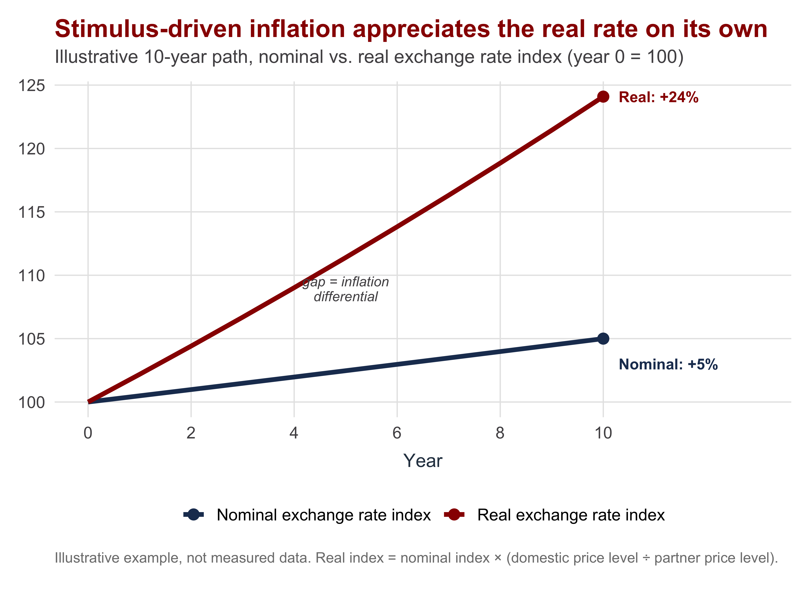
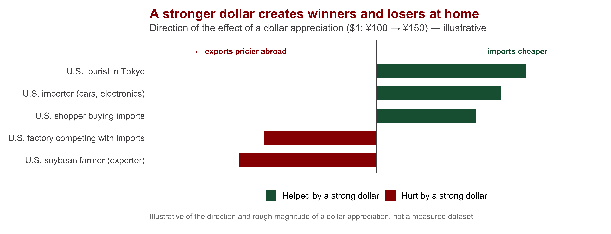
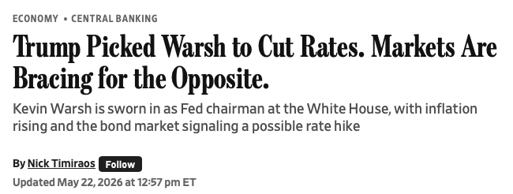
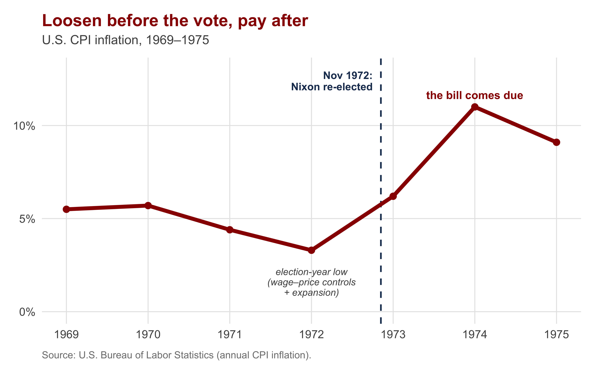

| Section | What we'll cover |
|---|---|
| 1 · From Mechanics to Preferences | Recall appreciation, regimes, the trilemma — plus real vs. nominal rates and adjustment tools |
| 2 · Two Policy Choices: Level and Regime | The strong-vs-weak question and the fixed-vs-floating question are distinct |
| 3 · The Preference Map | Which sectors want which currency, and why labor is not one bloc |
| 4 · The Three Society-Centered Models | Electoral, partisan, and sectoral accounts of who gets their way |
| 5 · Student Presentation | Do voters have informed preferences on exchange rates? |
| 6 · Case Workshop: A Weak Dollar for America? | Groups debate whether the U.S. should weaken or strengthen the dollar |
A Society-Centered Approach to Monetary & Exchange-Rate Policies
INTL 503 | Chapter 12
Professor Sarah Bauerle Danzman
July 23, 2026
Today’s Plan
Today’s Big Question
Who wants a strong currency, who wants a weak one — and whose preferences become policy?
From Mechanics to Preferences
Section 1
Terminology
| Concept | What you need to recall |
|---|---|
| Appreciation / depreciation | A currency strengthens (buys more foreign money) / weakens (buys less). "Strong currency" = appreciation |
| Fixed / floating / managed | Price set by the government (peg), by the market (float), or a blend the central bank steers (managed) |
| The trilemma | Fixed rate, free capital, monetary autonomy — a government can hold at most two of the three |
| Real vs. nominal exchange rate | The nominal rate is the posted price; the real rate adjusts for relative inflation — what actually buys what |
The one term that trips people up: “strong currency” sounds desirable, but it is appreciation — and appreciation hurts exporters and import-competing producers. So, not everyone wants a strong currency
Example: Domestic Inflation as Real Appreciation
Setup: Germany tries to shrink its current-account surplus by pairing two moves —
- Appreciating the nominal exchange rate
- Stimulating domestic demand (↑ C, ↑ G)
The catch: more domestic demand → higher German wages & prices.
Domestic inflation is itself a real appreciation — even if the nominal rate barely moves.
- Nominal exchange rate: +5% over 10 years
- Germany’s inflation: +30% · Partners’ inflation: +10%
- Real appreciation: ≈ +24% — nearly 5× the nominal move

Why this matters for the politics. Exporters care about the real rate — their competitiveness. A government can hold a nominal peg while domestic inflation quietly erodes the real rate and squeezes the tradable sector.
This also increases the real cost of debt service if borrowing is done in a third currency (usually USD).
Reducing a Current-Account Surplus: The Mechanics
- Recall: S − I = X − M (financial account = current account)
- A surplus (X > M) means Germany is saving more than it invests (S > I)
- Shrinking the surplus means closing that gap — two channels:
| Tool | What it does | What it targets |
|---|---|---|
| Appreciate the currency | Makes imports cheaper at home and exports pricier abroad | The current account, directly (X − M) |
| Increase consumption & government spending | Lowers national saving by raising C and G | The financial account, directly (S − I) |
The catch: both tools often lean on the same lever — interest rates — and pull in opposite directions.
- Raise rates → currency appreciates ✓ but saving rises ✗ (works against ↑C + G)
- Cut rates → consumption rises ✓ but currency depreciates ✗ (works against appreciation)
The fix: pair appreciation with fiscal stimulus (↑G directly) — not rate cuts — so the two channels reinforce instead of fighting.
Contrast: Adjustment Under the Gold Standard
- Today, Germany can appreciate its currency and/or stimulate demand — these are policy choices
- Under a fixed gold parity, neither tool works the same way
| Country | Today's tools | Under the gold standard |
|---|---|---|
| Germany (surplus) | Appreciate the currency and/or stimulate demand — a policy choice | Formally **revalue** — redefine the currency's gold content (rare, disruptive); otherwise gold piles up and domestic prices rise anyway |
| United States (deficit) | Manage the currency, adjust interest rates — a policy choice | **Raise interest rates** to pull gold back in — contractionary, risks recession |
Same asymmetry as today: the deficit country is forced to adjust (or lose its gold); the surplus country can simply let gold accumulate. Increased prices will eventually lead to a CA decline.
Two Policy Choices: Level and Regime
Section 2
Keep Two Questions Separate
Monetary and exchange-rate policy reflect domestic distributional conflict. Different groups want different things; coalitions decide who wins. But “what they want” splits into two distinct questions.
| Question | It asks | It is really about | Microfoundations |
|---|---|---|---|
| The LEVEL question | Should the currency be strong or weak? | Competitiveness and purchasing power — who exports, who imports, who consumes | SECTORAL model |
| The REGIME question | Should the rate be fixed or floating? | Stability vs. monetary autonomy — who is hurt by volatility, who needs domestic policy room | ELECTORAL and PARTISAN models |
A group can want a weak currency (level) and a fixed rate (regime) at once — exporters often do.
The Preference Map
Section 3
Who Wants What, and Why
| Group | Prefers | Why |
|---|---|---|
| Tradable sector (exporters, import-competing manufacturing) | Weak / competitive currency | Competitiveness — cheaper exports abroad, costlier imports at home |
| Non-tradable sector (services, retail, construction) | Strong / appreciated currency | Purchasing power — cheaper imported inputs and consumer goods |
| Financial sector | Stable, predictable policy | Investment certainty; inflation erodes the value of nominal claims |
| Wage earners | Depends on the employer's sector | Labor in steel wants what steel wants; labor in retail wants what retail wants |
A Stronger Dollar: Winners and Losers

🎧 This week’s podcast — The Indicator (Planet Money), “The Mighty US Dollar”: the same question in plain terms — who wins and who loses when the dollar is strong.
From a List to Two Coalitions
![Currency politics drawn as a tug-of-war between two cross-class coalitions. On the left, the tradable sector — exporters and import-competing firms and their workers — pulls the currency toward weak and competitive. On the right, the non-tradable sector — services and retail — together with consumers, pulls toward a strong currency with more purchasing power. In the center, above the contested exchange-rate level, the financial sector is the swing group: it wants stability and takes no fixed side on the level.](day11-chapter12_files/figure-revealjs/fig-sector-2x2-1.png)
A tug-of-war between two cross-class coalitions: the tradable sector pulls the currency down, non-tradable producers and consumers pull it up, and finance is the swing. The decisive cleavage is sectoral, not class.
The Three Society-Centered Models
Section 4
The Political Business Cycle
Governments value monetary autonomy because the economy decides elections. Before a vote, incumbents have an incentive to loosen policy — more growth, lower unemployment — and let the inflation bill come due later.


The same logic, now. Through 2025 President Trump publicly pressured the Fed to cut rates and criticized Chair Powell; once Powell’s term as chair ended he installed his own pick, Kevin Warsh (sworn in May 2026), expecting a more accommodative Fed. The political demand for cheap money is perennial — Friday’s chapter asks how central-bank independence is meant to resist it.
The Short-Run Phillips Curve (Key Term)
Phillips Curve (A. W. Phillips, 1958): a short-run trade-off between unemployment and inflation — a government can push unemployment down only by accepting higher inflation.
In a democracy this trade-off means that incumbent politicians can “juice” the economy before an election to make people feel better off, and then deal with inflation later.
Friday’s preview: the long-run curve is vertical — the trade-off vanishes over time. Today we use only the short-run version.

The Partisan Model
Parties represent different social bases, so they choose different points on the Phillips curve.
- Left parties (Labour, Social Democrats, U.S. Democrats) — tied to organized labor, weight unemployment: looser policy, tolerate inflation, accept a weaker / floating currency
- Right parties (Conservatives, the financial sector, wealth-holders) — weight inflation / price stability: tighter policy, a stronger, more stable currency
Empirically, left governments have often pursued stability over inflation:
- Mitterrand’s Socialist government adopted the hard-currency franc fort in 1983
- Parts of the German left supported an independent, inflation-averse Bundesbank
The lesson:
- sectoral coalitions, not monolithic parties, drive outcomes.
- Stating preferences is easy; the hard problem is aggregating competing preferences into a single policy.
The Sectoral Model
Exchange-rate policy reflects competition among sectors sorted by their exposure to trade — firms and their workers together. Each sector has a preference on both axes. (Frieden 2014)
This is the formal version of the preference map from earlier — the same cleavage, now with the fixed-vs-floating axis added.
Oatley’s caveats:
- Firms can hedge currency risk with forward markets — so volatility is less damaging than the model assumes
- In global value chains, many “exporters” rely on imported inputs — a weak currency raises their costs
![A two-by-two table of sectoral exchange-rate preferences after Frieden. Columns are preferred exchange-rate stability, high on the left (a fixed rate) and low on the right (floating). Rows are preferred currency level, high at top (strong) and low at bottom (weak). Top-left fixed-and-strong is empty. Top-right floating-and-strong holds the non-tradable and financial sectors. Bottom-left fixed-and-weak holds export-oriented producers. Bottom-right floating-and-weak holds import-competing producers.](day11-chapter12_files/figure-revealjs/fig-frieden-2x2-1.png)
Student Presentation
Over to today’s presenter
Bearce & Tuxhorn (2017) — “When Are Monetary Policy Preferences Egocentric? Evidence from American Surveys and an Experiment” · AJPS 61(1)
Presenter: ______________________ · Q&A and class discussion to follow
The micro-level test of the sectoral model: Bearce & Tuxhorn find that Americans whose employers are export-oriented show a measurably reduced preference for monetary autonomy — individual preferences tracking sectoral exposure, exactly as the model predicts.
Case Workshop: A Weak Dollar for America?
Section 5
Should the U.S. Pursue a Weak Dollar?
The puzzle
Some voices in Washington argue the U.S. should deliberately pursue a weaker dollar — to help manufacturers and exporters. Others insist a strong dollar serves America best. Who’s right — and who wins or loses either way?
Work in small groups
- Split in two: one group argues for a weak-dollar campaign, the other for a strong-dollar policy.
- Name 3–4 domestic groups each policy helps and hurts — use today’s preference map.
- What would the government actually have to do to get there, and at what cost?
Hints
- Use the sectoral model: who’s tradable, who’s non-tradable, where does finance sit?
- This is a level question, not a regime question (Section 2)
- Recall the mechanics (Section 1): what tool weakens a currency — and what does that tool also do to interest rates and consumption at home?
- Recall the electoral model: the political pressure for a weaker dollar is likely to be strongest when?
Debrief: A Weak Dollar Has Tradeoffs
Weak dollar helps: exporters, import-competing manufacturers, and their workers
Weak dollar hurts: consumers, importers, non-traded services — everything imported gets pricier
The tool: usually interest-rate cuts (or currency intervention) to push the dollar down
The mirror-image catch: cutting rates to weaken the dollar also stimulates consumption — pulling in more imports and working against the goal of shrinking the trade deficit
The U.S. is a chronic deficit country — this is Germany’s surplus problem in reverse, and it runs into the same interest-rate tension from Section 1.
Whose preference wins depends on the electoral calendar, which party holds the White House and the Fed, and which sectoral coalition has more political weight right now — exactly the three models from today.
Bridge to the State-Centered View
Section 6 · Looking ahead to Friday
Recap: Preferences Are Easy, Aggregation Is Hard
Today’s Big Question — Who wants a strong currency, who wants a weak one, and whose preferences end up as policy?
| Model | Key actor | Preference driven by | Watch out for |
|---|---|---|---|
| Electoral | The incumbent and voters | Re-election; the macroeconomy decides votes — a political business cycle | About timing, not which groups; evidence is mixed |
| Partisan | Parties — left vs. right | Left weights jobs (looser, weaker currency); right weights prices (tighter, stronger) | Coalitions, not parties, often decide (the franc fort) |
| Sectoral (Frieden) | Sectors by trade exposure — firms and their workers together | Tradable (export & import-competing) want it weak; non-traded and finance want it strong | Hedging; imported inputs; consumers cut across sectors |
Next Up: why adopt policies no group is demanding, handing money to unelected central bankers?

INTL 503 | Society-Centered Monetary Politics